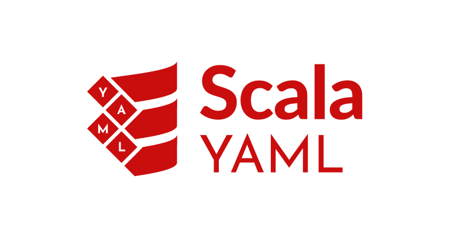

Scala Yaml

Scala Yaml is written in Scala, dependency-free library that allows to work with the YAML.
The goal of this project is to create idiomatic library which:
- provides compile time type safety
- semiautomatically derives codecs instances
- have explicit error handling and helpful error messages
- cross compiles to Scala.js and Scala Native (waiting for Scala 3 support in SN)
Please see the guide for more information
Help us create our roadmap!
Take part in our discussions, post your ideas, vote for feature requests and have a real impact on how our next milestone will look like!
Usage
import org.virtuslab.yaml.*
case class Address(city: String, zipcode: String) derives YamlCodec
case class Person(name: String, age: Int, address: Address) derives YamlCodec
val yaml = s"""name: John Wick
|age: 40
|address:
| city: Anywhere
| zipcode: 12-345
|""".stripMargin
val decoded = yaml.as[Person]
// Either[YamlError, Person] = Right(Person(John Wick,40,Address(Anywhere,12-345)))
case class Activity(kind: String, distance: Seq[Double]) derives YamlCodec
val activity = Activity("running", Seq(5.37, 4.98, 5.73))
val encoded = activity.asYaml
//kind: running
//distance:
// - 5.37
// - 4.98
// - 5.73